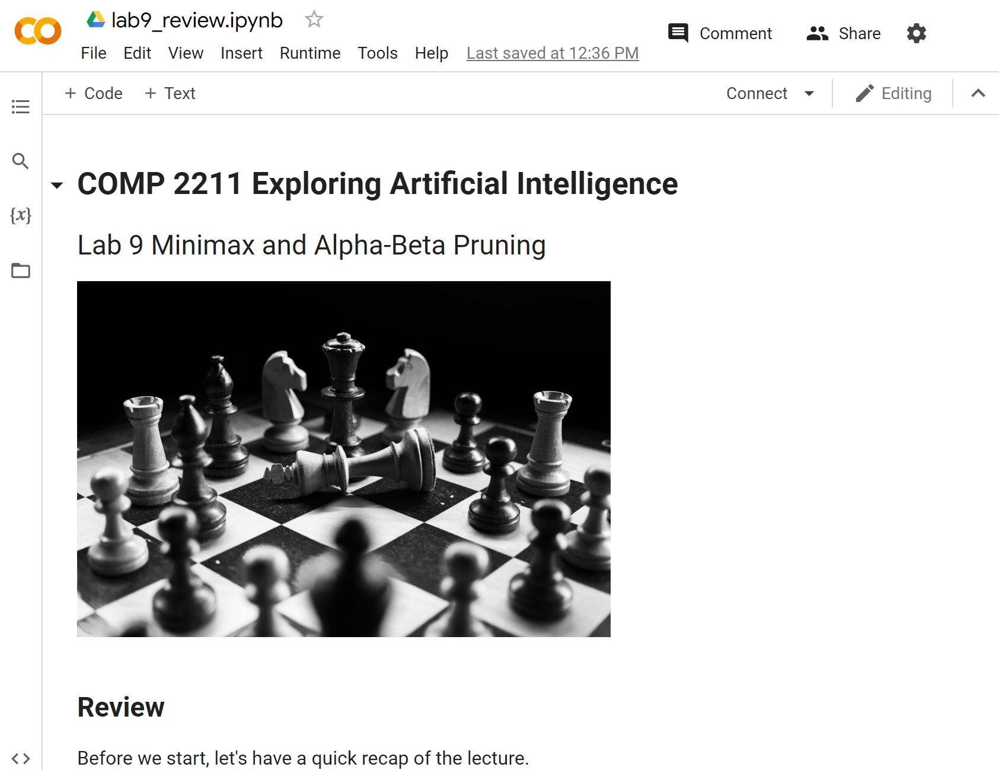

This part of this lab is a review of the Minimax and Alpha-Beta Pruning. It aims to refresh your memory of what you have learned in class.
Please download the notebook by right-clicking and selecting "Save link as" and opening it using Google Colab. You should see the following if you open the notebook successfully.

Board games are great testbeds to evaluate AI agents due to the simple representations, clear rules, huge search space, and simulation of the 'real world'.
You must have heard of Deep Blue and AlphaGo, which defeated top human players in chess and Go, respectively.
Deep Blue also used the alpha-beta pruning based method, while AlphaGo used Monte Carlo tree search and deep learning.
In this lab, we will implement a generalized tic-tac-toe (varying board size and number to connect) using minimax and alpha-beta pruning.
Several lab tasks are given to you to practice your skills in implementing the Minimax algorithm and its variants for a generalized tic-tac-toe. Please download the notebook and .py submission template, then open them on Google Colab. You should see the following if you open the notebook successfully.
lab9_tasks.py (the name should be the same, including its case), and submit the zip file (i.e. lab9_tasks.zip) to ZINC